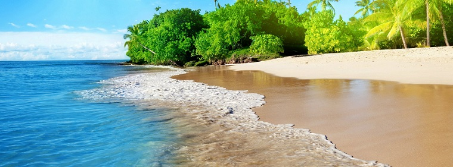
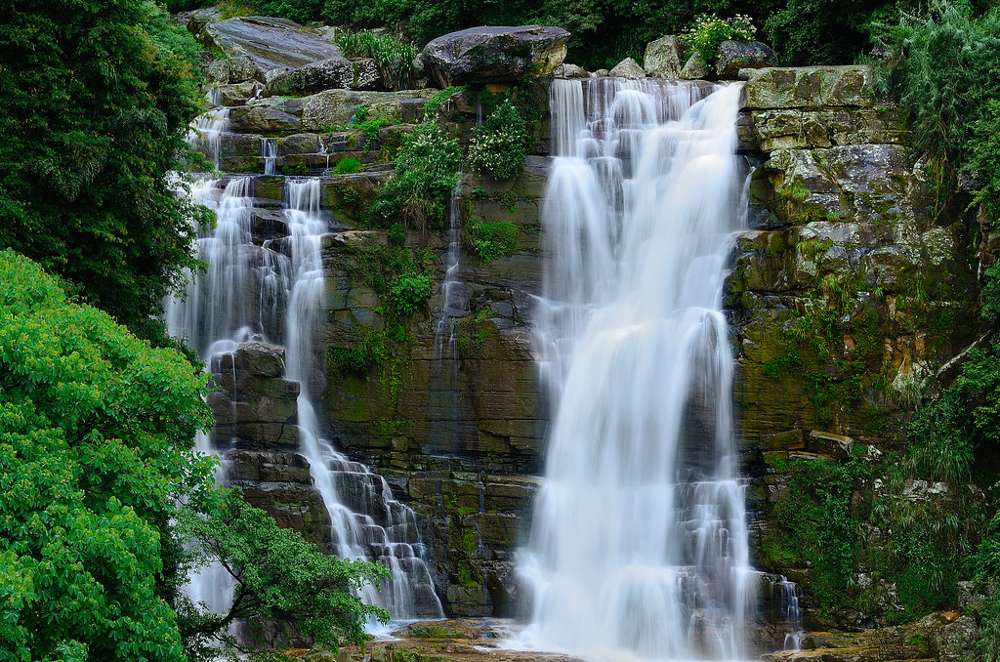
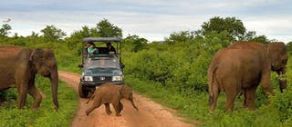
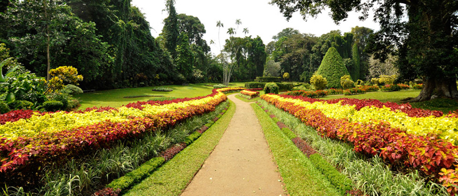
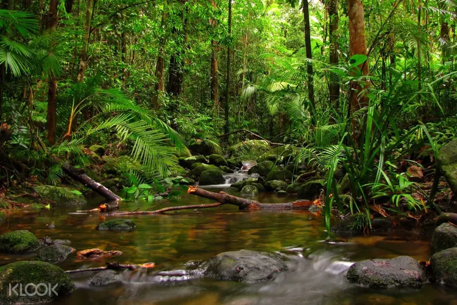

About Us
Wild Asia Travels is a newly started travel company based in Sri Lanka. We offer luxury vacation packages
at a very affordable and reasonable price. We will assist our customers throughtout their stay in Sri lanka from
helping in the arrangements for VISA to airport pickup to provide full transportation. On request we can also arrange a
tour guide for better experience in your stay in Sri lanka.
Our Vision
Our Vision is to become a top leading organization in the market.With our friendly,experienced staff we are on the fastest
track in doing this.
Our Mission
Our mission at Wild Asia Travels is to provide our customers with a memorable holiday experience.As we grow, we aim
to extend more desinations to our list thus enabling you more choice.
About Sri Lanka
The Democratic Socialist Republic of Sri Lanka,is an island situated in the Indian ocean. The capital city of
Sri Lanka is Sri Jayawardhana Pura Kotte. The endless beaches, waterfalls, timeless ruins, welcoming people,
oodles of elephants, surfing, cheap prices, fun trains, famous tea and flavourful food make Sri Lanka irresistible.
Top 5 Beaches In Sri Lanka

- Mirissa Beach
- Unawatuna Beach
- Hikkaduwa Beach
- Marble Beach
- Arugam Bay
Top 5 Waterfalls in Sri Lanka

- Bambarakanda Waterfalls
- Diyaluma Waterfalls
- Bopath Ella Waterfalls
- Ravana Ella Waterfalls
- Devon Waterfalls
Top 5 Ancient Ruin Places In Sri Lanka

- Sigriya Rock Fortress
- The ancient city of Polonnaruwa
- The sacred city of Anuradhapura
- Dambulla Cave Temple
- Ritigala Archaeological Site
Top 5 National parks in Sri Lanka

- Yala National Park
- Udawalawe National Park
- Wasgamuwa National Park
- Wilpaththu National Park
- Minneriya National Park
Top 5 Botanical Gardens in Sri Lanka

- Peradeniya Botanical Garden
- Hakgala Botanical Garden
- Seetawaka Botanical Garden
- Henarathgoda Botanical Garden
- Mirijjawila Botanical Garden
Top 5 places to hike in Sri Lanka

- Horton Plains
- Pidurangala
- Ella Rock
- Sinharaja Rainforest
- Ambuluwawa